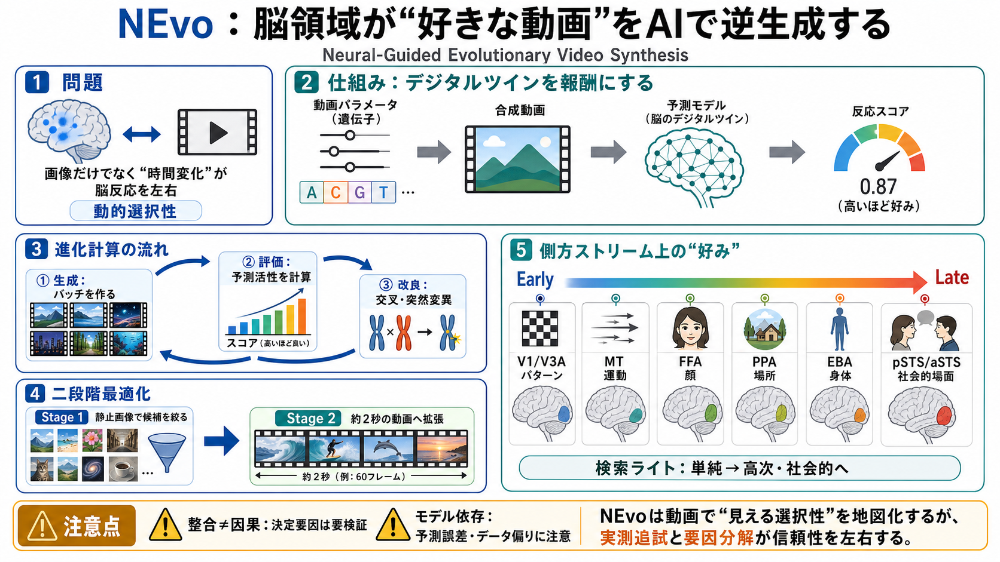

NEvo: Neural-Guided Evolutionary Video Synthesis for Dynamic Visual Selectivity
# NEvo: Neural-Guided Evolutionary Video Synthesis for Dynamic Visual Selectivity. While recent in silico brain encoding…

「脳の特定領域を最も強く反応させる動画は何か？」を、AIの進化計算で合成して探します。
Neural-Guided Evolutionary Video Synthesis for Dynamic Visual Selectivity
ある領域が好きになりやすいのは「画像」だけでなく、時間とともに変化する要因を含む“動画”です。 NEvoは、その好みを合成動画として可視化します（活性化最大化）。
各脳領域に対して、エンコーディングモデル（デジタルツイン）が「この動画でどれくらい反応するか」を予測し、その予測活性を報酬にします。
遺伝子（対象・照明・動き・気分など）で動画を生成し、バッチ→スコア→上位を交叉・突然変異で更新して、世代を重ねて上がる方向へ探索します。
まず最強の“静止画像”を探索し、その画像を約2秒の動画へ拡張して最適化します。 動画の全探索コストを下げ、動的要因も同時に扱います。
合成動画は領域の既知の選好（顔・場所・身体・運動・社会的場面など）に沿うと主張されます。
各領域は、自身の最初の静止フレームよりも“動きのある動画”の方が高くスコアされる、とされます。 つまり単なる静止特徴ではなく、動的要因が効きます。
V1からaSTSへ“検索ライト”を移動させるように見ると、刺激の性質が単純なパターン/運動から顔・人・相互作用へ連続的に変化すると描かれます。
視覚皮質には機能的な流れがあり、特に側方ストリーム（lateral stream）で、単純→高次の“動的・社会的”特徴へと変化していくと考えられています。
合成刺激が領域の既知の選好と“整合”しても、どの局所要因が決定的か（顔の構造か、運動の種類か等）は自動では切り分けできません。
デジタルツイン（エンコーディングモデル）の性能やバイアスが、そのまま探索の方向を決めます。 予測誤差が大きい場合、「脳が欲している特徴」ではなく「モデルが高く評価する特徴」を拾うリスクがあります。
NEvoは、予測モデルを報酬にして動画を逆生成し、静止→動画の二段階と側方ストリーム上の連続変化を通じて、領域の動的選択性を“地図のように”描こうとします。
ただし、デジタルツインの妥当性と要因分解の検証が結論の信頼性を左右します。
# NEvo: Neural-Guided Evolutionary Video Synthesis for Dynamic Visual Selectivity. While recent in silico brain encoding…
### NEvo: Neural-Guided Evolutionary Video Synthesis for Dynamic Visual Selectivity. The human brain processes dynamic v…
What kind of video would make a given part of your visual brain light up the most? **NEvo** answers this *in silico*: it…
## Post. 🚨 NEW PREPRINT Videos strongly shape activity across the visual cortex. But can we design videos that maximally…
## Navigation Menu. We read every piece of feedback, and take your input very seriously. # Saved searches. ## Use saved …